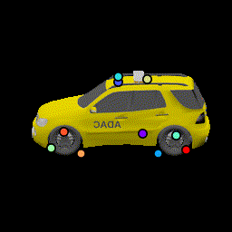
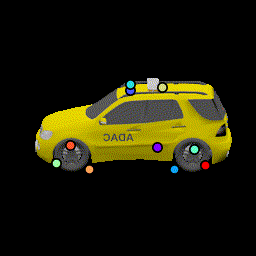
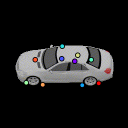
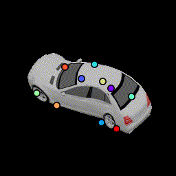
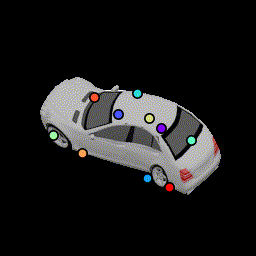

Supplementary Material:
Discovery of Latent 3D Keypoints via End-to-end Geometric Reasoning
Keypoint prediction from any angles
Results with more viewing variations (Supplement to Figure 3 in the paper). This is frame-by-frame prediction with no temporal constraints. 

Chairs
Test chairs from ShapeNet. This is a frame-by-frame keypoint prediction on each animation frame. No temporal information is used.We show how the network is able to utilize the same keypoints across object instances and consistently predict keypoints across viewing angles, even when parts are occluded such as the back legs.
Planes
Test planes from ShapeNet. Notice failure cases in the bottom row where the orientation network fails to predict the correct orientation of a few planes with very unusual wing shapes.Cars
Test cars from ShapeNet. Notice failure cases on the bottom row: The second car is mostly black which is the same as the background. The third car looks very symmetric that the predicted orientation is sometimes reversed.Ablation Study
We present an ablation study for the primary losses as well as how their weights affect the results. Baseline (12 keypoints) |
 No multiview consistency Notice how points are no longer stationary. |
No relative pose loss Points are concentrated at the center, but are still separated from separation loss |
 More noise in relative pose loss This encourages points to be more robust to estimation error by spreading them out further. |
No silhouette loss This causes the points to lie outside the car. |
Varying number of keypoints
We trained the network with varying number of keypoints [3, 5, 8, 10, 15, 20]. The network starts by discovering the most prominent components such as the head and wings, then gradually tracks more parts as the number increases. Colors do not correspond across results as they're independent..gif)
.gif)
Results on deformed object
To evaluate the robustness of these keypoints under shape variations, and whether the network uses local features to detect local parts as opposed to placing keypoints on a regular rigid structure, we test our network on a non-rigidly deformed car. Here the network is able to predict where the wheels are and the overall deformation of the car structure.
 

3D Visualization of keypoints
We visualize the positions of the predicted 3D keypoints by projecting them back to the 3D mesh of the following car. We show results for all 120 frames used to generate the animation. The frustrum indicates the camera's direction. (Our algorithm never has access to the 3D and take as input a single image. This is only for visualization.) The variances of these keypoint locations are reported in Table 1 in the paper.
Proof-of-concept results on real images
We train our network by adding random backgrounds to our rendered training examples. Surprisingly, such a simple modification allows the network to predict keypoints on some of the Imagenet's cars. We show a few hand-picked results and some failure modes on the right. The network especially has difficulties dealing with large perspective distortion and cars that have strong patterns or specular highlights.